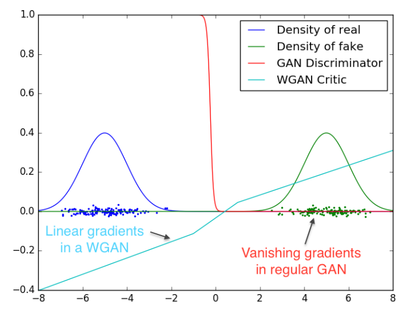

Wasserstein Generative Adversarial Network
The Wasserstein generative adversarial network (WGAN) (Arjovsky, Chintala, and Bottou 2017) is a recently proposed state-of-the-art generative model that leverages ideas from optimal transport to address key limitations of the traditional generative adversarial network (GAN) (Goodfellow et al. 2014).
To provide a comprehensive introduction to WGAN, we begin by clarifying the problem of generative modeling. Among various approaches, we focus specifically on GANs, outlining their main ideas and performing a straightforward theoretical analysis. Motivated by the challenges encountered in the training of GANs, WGANs are naturally introduced, highlighting how ideas from optimal transport improve the performance and stability of machine learning models.
Generative Model
General Overview
In recent years, it has been a hot topic to train machine learning models that exhibit human capabilities, one of which is creativity — the ability to create novel objects within a given category after observing a set of examples. Just like a human child, who can draw numerous distinct cats after seeing just a few real-life cats, one example of generative modeling is to train a machine learning model based on a set of cat images, which can produce an unlimited variety of new cat images that do not resemble those in the training set.
In brief, the problem of generative modeling has the following requirements:
The training set consists of a finite number of samples.
The generated outputs belong to the same category as the training samples.
The model is capable of producing an infinite variety of outputs.
Generative models have numerous connections and applications in various fields, e.g., synthetic data generation (Eigenschink et al. 2023), image generation (Oussidi and Elhassouny 2018), game theory (Cao, Guo, and Laurière 2020) and reinforcement learning (Franceschelli and Musolesi 2024), etc. We refer interested readers to (Harshvardhan et al. 2020) for a comprehensive survey on the analysis and applications of generative models.
Problem Formulation
Let \(\mathcal{X}\subset \mathbb{R}^D\) denote the sample space where training samples take values. The key assumption of generative modeling is the existence of an unknown probability distribution \(\mathbb{P}_r\) on \(\mathcal{X}\), from which the training samples are drawn. Therefore, generative modeling typically consists of two parts:
Approximation: Approximate the distribution \(\mathbb{P}_r\) with a parameterized model \(\mathbb{P}_\theta\in\mathscr{P}(\mathcal{X})\), where \(\theta\) represents the parameters, based on the finite number of training samples from \(\mathbb{P}_r\).
Sampling: Generate samples from the approximated distribution \(\mathbb{P}_\theta\).
In the example of generating cat images, the approximation step concludes the features of cats, e.g., with a tail and four legs, while the sampling step creates new cat images based on the features learnt in the previous step. We remark that, the features learnt in the approximation step depend heavily on the quality of the training samples. If all the training samples are only showing black cats, then the color feature learnt by the model might be “all cats are black”, which is not necessarily the ground truth.
Geometric Structure
Before diving deeper into state-of-the-art methods of generative modeling, it is crucial to understand why classical density estimation methods in Statistics are not performing well. One of the reasons lies in the geometric structure of the problem that the distribution \(\mathbb{P}_r\), in most cases, is supported only on a low-dimensional manifold within \(\mathbb{R}^D\).
Consider the task of image generation, where each image consists of approximately \(10^6\) pixels with three color channels, i.e., \(D \approx 3\times 10^6\). While each one of the images can be viewed as a single point in \(\mathbb{R}^D\), the true distribution \(\mathbb{P}_r\) is typically concentrated on a manifold with an intrinsic dimension \(d\), where \(d\leq 50\) for most image datasets (Pope et al. 2021). This significant gap between the ambient dimension \(D\) and the intrinsic dimension \(d\) arises from implicit constraints that define the structure of \(\mathbb{P}_r\). For instance, human face images require symmetry and the nose and ears have to adhere to specific shape characteristics.
Under this specific structure, perturbation-based sampling methods, which refer to the generation of a randomly perturbed version of one of the training samples, no longer work. As a simple example illustrating such failure, consider \(\mathbb{P}_r\) as a uniform distribution on a unit circle \(C^1\subset\mathbb{R}^2\). Adding Gaussian noises to a point \((x,y)\in C^1\) almost surely yields a point outside the manifold \(C^1\). In other words, general perturbations would destroy the manifold structure, if not carefully designed.
Similarly, classical density estimation methods face at least two major challenges:
The density approximation on the manifold. The density of \(\mathbb{P}_r\), if exists on the manifold, is almost everywhere zero under the Lebesgue measure on \(\mathbb{R}^D\).
The density-based sampling scheme. Sampling from a distribution on a high-dimensional space with a known density suffers from the curse of dimensionality.
Those challenges motivate the development of state-of-the-art generative modeling approaches based on different ideas, as introduced in the following section.
SOTA Approaches
Popular methods of generative modeling can be roughly categorized as:
Variational Autoencoders (VAEs): VAEs are likelihood-based generative models that train an encoder to map samples to a latent space and a decoder to reconstruct samples from latent vectors.
Generative Adversarial Networks (GANs): GANs involve a generator and a discriminator network trained in an adversarial way, where the discriminator learns to distinguish between real and generated data, while the generator aims to create samples indistinguishable from real data.
Diffusion models: Diffusion models progressively corrupt samples by adding random noise and reverses this process, reconstructing new samples from pure random noise.
While all approaches share the same objective, their methodologies differ significantly. In the following discussion, we briefly introduce GANs to prepare the readers for the discussion on WGANs.
Generative Adversarial Network
Main Idea
As mentioned above, a generative model shall have the “power of infinity”, i.e., the ability to produce an infinite variety of outputs. However, when it comes to numerical implementations of most algorithms, we are always trying to discretize continuous objects. For example, when numerical integration is performed, the integration domain is discretized into a large (but finite) number of small areas. Attaining infinity seems impossible at the first glance, but modern computers do attain infinity in one specific task — generating random samples from a given distribution. We draw distinct samples from a multivariate standard Gaussian \(N(0,I)\) each time the random number generator is called, which is actually the source of the “power of infinity”. Inspired by such observations, generative models shall learn how to map random samples from a known distribution, e.g., \(N(0,I)\), to outputs that follow \(\mathbb{P}_r\), i.e., the models should be delivering randomness, rather than creating new randomness.
Mathematically speaking, we call \(\mathcal{Z}\subset \mathbb{R}^l\) the latent space, where the latent random variable \(Z\) takes values. The random variable \(Z\) follows a given probability distribution \(\mathbb{P}_Z\), which is often taken as a multivariate Gaussian. A GAN aims to learn a function parameterized by \(\theta\): \[ G_\theta:\mathcal{Z}\to\mathcal{X}, \] such that the law of \(G_\theta(Z)\) is approximately \(\mathbb{P}_r\). In practice, \(G_\theta\) is typically taken as a neural network, while \(\theta\) denotes the collection of all the network paramaters. For the purpose of notation, we denote \(\mathbb{P}_\theta\) as the law of \(G_\theta(Z)\), i.e., \(\mathbb{P}_\theta = (G_\theta)_\#\mathbb{P}_Z\), so that the problem turns into: \[ \inf_\theta d(\mathbb{P}_\theta,\mathbb{P}_r), \] where \(d\) is some information divergence that measures the difference between two probability distributions. Such a formulation naturally poses two questions:
How to supervise the model with the finite number of training samples from \(\mathbb{P}_r\)?
How to select the information divergence \(d\)?
The wisdom of GANs lies in using another neural network to approximate \(d\) without specifying it explicitly. The network that approximates \(d\) is parameterized by \(w\): \[ D_w:\mathcal{X}\to[0,1]. \]
The fundamental framework of GANs consists of a generator \(G_\theta\) and a discriminator \(D_w\). The generator receives inputs as samples \(z\) from the known distribution \(\mathbb{P}_Z\) and outputs the generated samples \(G_\theta(z)\in\mathcal{X}\). The discriminator receives inputs as elements in \(\mathcal{X}\) (could be samples in the training set or outputs of the generator \(G_\theta(z)\)), and assigns a score as the probability that the input received is from the true distribution \(\mathbb{P}_r\). In principle, the discriminator hopes to distinguish the training samples from \(\mathbb{P}_r\) and the fake samples from \(\mathbb{P}_\theta\) that are produced by the generator, while the generator hopes to fool the discriminator on the top of that. Since the GAN architecture creates a competition between the generator and the discriminator, ideally, both networks perform well enough in fulfilling their respective tasks after training. The trained generator is exactly the generative model we have been referring to, while the auxiliary discriminator is simply disregarded.
With the GAN architecture in mind, it suffices to propose loss functions for both networks, as the only missing components. The constructions of loss functions are rather intuitive: if the input of the discriminator comes from \(\mathbb{P}_r\), its output shall be close to one; if the input of the discriminator comes from \(\mathbb{P}_\theta\), its output shall be close to zero. With the logarithms introduced, the discriminator maximizes \(\mathbb{E}_{X\sim\mathbb{P}_r}\log D_\omega(X) + \mathbb{E}_{Z\sim\mathbb{P}_Z}\log (1-D_\omega(G_\theta(Z)))\) w.r.t. \(w\). When the discriminator reaches its optimum, the generator aims to minimize the same loss in order to fool the discriminator, resulting in the optimization problem: \[ \inf_\theta\sup_\omega \mathbb{E}_{X\sim\mathbb{P}_r}\log D_\omega(X) + \mathbb{E}_{Z\sim\mathbb{P}_Z}\log (1-D_\omega(G_\theta(Z))). \]
We leave the following remarks on the training of GANs:
The generator and the discriminator share exactly the same loss function, but are optimizing it in opposite directions. In this sense, GAN has essential difference from the well-known actor-critic algorithm in reinforcement learning, where two networks have their respective loss functions to optimize.
The expectations in the loss functions are approximated by Monte Carlo. For numerical implementations, one only needs to compute the loss function, call backpropagation for gradient computations (w.r.t. \(w\) and \(\theta\)), and conduct gradient descent/ascent for the parameters of the generator/discriminator network.
Due to the inf-sup structure of the problem, one typically trains the discriminator for several epochs before training the generator for a single epoch. GANs work in the way that the training samples supervise the discriminator, and the discriminator supervises the generator.
Theoretical Analysis
We demonstrate a simple theoretical analysis for the GAN optimization problem (Goodfellow et al. 2014). Due to technical difficulties modeling the parameter optimization procedure within neural networks, we omit the dependence on the parameters \(\theta\) and \(w\), and rewrite the optimization problem in terms of the generator \(G\) and the discriminator \(D\). For simplicity, we adopt a change of variable \(Y := G(Z)\) to absorb all dependencies on the generator \(G\). Since \(Y\) is the output of the generator, it follows the distribution \(\mathbb{P}_\theta\). The inner layer optimization of the inf-sup problem turns out to be explicitly solvable: \[ \sup_D f(D):=\mathbb{E}_{X\sim\mathbb{P}_r}\log D(X) + \mathbb{E}_{Y\sim\mathbb{P}_\theta}\log (1-D(Y)). \] Compute the first variation of \(f\) in \(D\) w.r.t. the perturbation \(\psi\): \[ \delta f(D)(\psi) := \lim_{\varepsilon\to 0}\frac{f(D + \varepsilon \psi) - f(D)}{\varepsilon} = \mathbb{E}_{X\sim\mathbb{P}_r}\frac{\psi(X)}{D(X)} - \mathbb{E}_{Y\sim\mathbb{P}_\theta}\frac{\psi(Y)}{1-D(Y)}. \] Assume \(\mathbb{P}_r\) and \(\mathbb{P}_\theta\) have respective densities \(p_r\) and \(p_\theta\) w.r.t. the Lebesgue measure. The optimality criterion \(\delta f(D^*)(\psi) = 0\), \(\forall \psi\) implies that \[ D^* = \frac{p_r}{p_r + p_\theta}. \] Plugging back into the objective function yields \[ f(D^*) = \int \left[p_r(x)\log\frac{p_r(x)}{\frac{p_r(x) + p_\theta(x)}{2}} + p_\theta(x)\log\frac{p_\theta(x)}{\frac{p_r(x) + p_\theta(x)}{2}}\right]\,dx - 2\log 2. \] This quantity can be identified with the Jensen-Shannon divergence: \[ f(D^*) = D_{\text{KL}} \left(\mathbb{P}_r||\frac{\mathbb{P}_r + \mathbb{P}_\theta}{2}\right) + D_{\text{KL}} \left(\mathbb{P}_\theta||\frac{\mathbb{P}_r + \mathbb{P}_\theta}{2}\right) - 2\log 2=: 2\text{JS}(\mathbb{P}_r,\mathbb{P}_\theta) - 2\log 2. \] Consequently, if the discriminator has reached its optimum \(D^*\), training the generator is equivalent to minimizing the Jensen-Shannon divergence between the real and the approximated distributions.
Wasserstein Generative Adversarial Network
Motivation
Despite great success in practical applications, the training of GANs is notoriously unstable. One of the main issues is called mode collapse, the phenomenon that a trained GAN generates samples of one single variety while ignoring other possible modes. It is widely believed that the main cause of mode collapse is the lack of control on the discriminator (Kushwaha, Nandi, et al. 2020). Philosophically, if the discriminator learns much faster than the generator, it criticizes all the samples produced by the generator, so that the generator does not know how to proceed. Conversely, if the discriminator learns much slower than the generator, it accepts all the results generated by the generator, which once again causes the similar issue. Hence, normal GAN training requires a careful adjustment in the relative learning speed of the generator and the discriminator. Numerically, we shall not train the discriminator till optimality before training the generator, despite the actual inf-sup structure of the optimization problem.
There are two main streams of ideas in the literature to augment the stability of GANs:
Minimize an information divergence other than the Jensen-Shannon divergence.
Use multiple generators to explicitly enforce GANs to capture diverse modes.
Wasserstein GANs take the first approach and use the Wasserstein distance (with \(p=1\)) instead of the Jensen-Shannon divergence. To understand what motivates WGANs, there are two main questions to answer:
What is the advantage of the Wasserstein distance over the Jensen-Shannon divergence?
How to encode the minimization of the Wasserstein distance in the loss functions?
Advantage of Wasserstein Distance
We refer to a simple working example from (Arjovsky, Chintala, and Bottou 2017) that illustrates the advantage of using the Wasserstein distance \(W(\mathbb{P}_r,\mathbb{P}_\theta)\).
Consider the setting where \(\mathcal{X}= \mathbb{R}^2\). Let \(S_\theta := \{\theta\}\times [0,1]\) denote a family of unit line segments parameterized by \(\theta\). Clearly, each \(S_\theta\) is a one-dimensional manifold within \(\mathcal{X}\). Let \(\mathbb{P}_\theta\) be the uniform distribution on \(S_\theta\) and \(\mathbb{P}_r = \mathbb{P}_{\theta = 0}\). The optimal value of \(\theta\) that guarantees \(\mathbb{P}_r = \mathbb{P}_\theta\) is thus \(0\). We compare four differently defined information divergences between \(\mathbb{P}_r\) and \(\mathbb{P}_\theta\):
Total variation: \[ \text{TV}(\mathbb{P}_0,\mathbb{P}_\theta) := \sup_{A\in\mathscr{B}_{\mathcal{X}}}|\mathbb{P}_0(A) - \mathbb{P}_\theta(A)|, \] where \(\mathscr{B}_{\mathcal{X}}\) denotes the Borel sigma field on \(\mathcal{X}\). Since the supports \(S_0\) and \(S_\theta\) are disjoint when \(\theta \neq 0\), the total variation attains its maximum value \(1\). Therefore, \[ \text{TV}(\mathbb{P}_0,\mathbb{P}_\theta) = \begin{cases} 0 &\text{if}\ \theta = 0\\ 1 & \text{else}\end{cases}. \]
Kullback-Leibler divergence: \[ \text{KL}(\mathbb{P}_0||\mathbb{P}_\theta) := \begin{cases} \mathbb{E}_{\mathbb{P}_\theta} \left(\frac{\text{d}\mathbb{P}_0}{\text{d}\mathbb{P}_\theta}\log \frac{\text{d}\mathbb{P}_0}{\text{d}\mathbb{P}_\theta}\right)& \text{if}\ \mathbb{P}_0 <<\mathbb{P}_\theta\\ \infty & \text{else}\end{cases}, \] where \(<<\) denotes the absolute continuity between measures. Since the supports \(S_0\) and \(S_\theta\) are disjoint when \(\theta \neq 0\), absolute continuity fails and the KL divergence is infinite. Therefore, \[ \text{KL}(\mathbb{P}_0||\mathbb{P}_\theta) = \begin{cases} 0 &\text{if}\ \theta = 0\\ \infty & \text{else}\end{cases}. \]
Jensen-Shannon divergence: \[ \text{JS}(\mathbb{P}_0,\mathbb{P}_\theta) := \frac{1}{2}\text{KL}(\mathbb{P}_0||\frac{\mathbb{P}_0 + \mathbb{P}_\theta}{2}) + \frac{1}{2}\text{KL}(\mathbb{P}_\theta||\frac{\mathbb{P}_0 + \mathbb{P}_\theta}{2}). \] Note that \(\mathbb{P}_0<<\frac{\mathbb{P}_0 + \mathbb{P}_\theta}{2}\), hence the Jensen-Shannon divergence is always finite. When \(\theta\neq 0\), we calculate the two Radon-Nikodym derivatives \[ \frac{\text{d}\mathbb{P}_0}{\text{d}\frac{\mathbb{P}_0 + \mathbb{P}_\theta}{2}} = 2\mathbb{I}_{S_0},\quad \frac{\text{d}\mathbb{P}_\theta}{\text{d}\frac{\mathbb{P}_0 + \mathbb{P}_\theta}{2}} = 2\mathbb{I}_{S_\theta}, \] where \(\mathbb{I}_A\) denotes the indicator of a set \(A\). Those conclusions could be verified from definitions \[ \int_A 2\mathbb{I}_{S_0}(x)\,\text{d}\frac{\mathbb{P}_0 + \mathbb{P}_\theta}{2}(x) = \mathbb{P}_0(A\cap S_0) + \mathbb{P}_\theta(A\cap S_0) = \mathbb{P}_0(A),\ \forall A\in\mathscr{B}_{\mathcal{X}}. \] Therefore, \[ \text{JS}(\mathbb{P}_0,\mathbb{P}_\theta) = \begin{cases} 0 &\text{if}\ \theta = 0\\ \log 2 & \text{else}\end{cases}. \]
Wasserstein distance with \(p=1\): \[ W(\mathbb{P}_0,\mathbb{P}_\theta) := \inf_{X\sim \mathbb{P}_0,Y\sim\mathbb{P}_\theta} \mathbb{E}\|X - Y\|_2. \] From geometric intuition, \(T(x) = x+\theta\) is the optimal transport map under the convex cost \(c(x,y) = \|x-y\|_2\). Therefore, \[ W(\mathbb{P}_0,\mathbb{P}_\theta) = |\theta|. \]
Obviously, only the Wasserstein distance exhibits the continuity in parameter \(\theta\), while other divergences have discontinuities at \(0\). This observation has been made rigorous in general cases (Arjovsky, Chintala, and Bottou 2017). The authors prove that if the generator \(G_\theta\) is continuous in \(\theta\), then so is \(W(\mathbb{P}_r,\mathbb{P}_\theta)\). If the generator \(G_\theta\) is locally Lipschitz in \(\theta\), then so is \(W(\mathbb{P}_r,\mathbb{P}_\theta)\) under mild regularity assumptions, which, by Rademacher’s theorem, implies that \(W(\mathbb{P}_r,\mathbb{P}_\theta)\) is almost everywhere differentiable in \(\theta\).
The continuity and differentiability w.r.t. the parameter is crucial in the training of GANs and is closely related to the issue of vanishing gradients. When the discriminator has reached its optimum and one gradient step of the generator is performed, the gradient actually refers to \(\nabla_{\theta}[d(\mathbb{P}_r,\mathbb{P}_\theta)]\). In the example above, all divergences except the Wasserstein distance provide trivial (vanishing) gradients for the generator. By contrast, the Wasserstein distance provides a gradient that is \(1\) for positive \(\theta\) and \(-1\) for negative \(\theta\), which is always effective for the generator. Thanks to the physical interpretation of optimal transport, the Wasserstein distance, as a specific optimal-transport-based information divergence, greatly mitigates the issue of vanishing gradients for the generator.
Construction of WGAN
In terms of numerical implementation, an inf-sup formulation of the optimization problem is required, as it clearly specifies the loss functions. Luckily, the Kantorovich-Rubinstein duality provides the representation: \[ W(\mathbb{P}_r,\mathbb{P}_\theta) = \sup_{\|f\|_L\leq 1} \mathbb{E}_{X\sim \mathbb{P}_r} f(X) - \mathbb{E}_{Y\sim\mathbb{P}_\theta} f(Y), \] where the supremum is taken over all Lipschitz functions \(f\) with Lipschitz constants no larger than \(1\). Substituting \(f = \frac{g}{K}\) allows the relaxation in the Lipschitz constant: \[ K\cdot W(\mathbb{P}_r,\mathbb{P}_\theta) = \sup_{\|g\|_L\leq K} \mathbb{E}_{X\sim \mathbb{P}_r} g(X) - \mathbb{E}_{Y\sim\mathbb{P}_\theta} g(Y). \] Therefore, the complete optimization problem of WGANs w.r.t. the parameterized generator \(G_\theta\) and discriminator \(D_w\) is given by \[ \inf_\theta\sup_{w:\|D_w\|_L\leq K} \mathbb{E}_{X\sim \mathbb{P}_r} D_w(X) - \mathbb{E}_{Z\sim\mathbb{P}_Z} D_w(G_\theta(Z)). \] The objective of this optimization problem serves as the loss functions in WGANs, shared by both the generator and the discriminator. One last piece of detail for the implementation of WGANs lies in the way to numerically impose the constraint \(\|D_w\|_L\leq K\) for parameters \(w\). If \(D_w\) is parameterized by a feedforward neural network, each layer of the network consists of an affine mapping \(x\mapsto Wx + b\) with weight \(W\), bias \(b\), and a mapping of the nonlinear activation function \(\sigma\). Clearly, the affine mapping has Lipschitz constant \(\|W\|\), while the common activation functions, e.g., sigmoid, hyperbolic tangent, ReLU, etc, have Lipschitz constants \(L_\sigma<\infty\). Therefore, the composition \(x\mapsto \sigma(Wx+b)\) has a Lipschitz constant \(L_\sigma\|W\|\), which is uniform w.r.t. the trainable network parameters if \(\|W\|\) has a uniform upper bound, i.e., when \(w\) is restricted to a compact domain. As a result, WGANs impose the Lipschitz constraint by parameter clipping, e.g., restricting each component of \(w\) to take values in \([-0.01,0.01]\).
We remark that, by imposing the Lipschitz constraint, the discriminator is not allowed to saturate, thus providing effective gradients everywhere. As shown in the plot below, the GAN discriminator is too good at distinguishing two Gaussian distributions to provide effective gradients. In contrary, the WGAN discriminator (critic) with parameter clipping does not perform that well in distinguishing, but does provide effective gradients everywhere. Philosophically, the GAN discriminator is too smart that it demotivates the learning of the generator!

Conclusions and Future Studies
To conclude, WGANs improve the training stability of GANs by switching the minimization of the Jensen-Shannon divergence to that of the Wasserstein distance, which is continuous in terms of the parameter of the generator. Numerically, we make use of the Kantorovich-Rubinstein duality to keep the inf-sup structure of the optimization problem, and adopt parameter clipping to impose the Lipschitz continuity.
As pointed out in (Arjovsky, Chintala, and Bottou 2017), future studies can be conducted in the following directions:
Impose the Lipschitz continuity of the neural network with a different technique, due to the subtleties in choosing the clipping hyperparameter.
Explain why WGAN training is unstable when momentum based optimizers (like Adam) or high learning rates are used.